Maya is a project in Teach For India’s student vision that started in May 2013, and resulted in a spectacular Broadway Musical called ‘Maya’ in November 2014. It is a demonstration of what is possible for children with no previous exposure to the arts. It is a symbol of the kind of education that all children deserve – one that integrates academics, values and mindsets, and exposure and access. The Musical is a partnership between Teach For India students and artists on Broadway. It is an original script, with Broadway composed music, which tells the story of Princess Maya’s journey to “Find her Light”. The ask was to design the entire branding and communications solution to best showcase the Musical and the project as a whole.
The over-arching design concept was inspired by the Maya drawings of the children, and stained glassed paintings to show the play with light. We preserved the raw edges, chunky outlines, rich translucent colors, and the character creations found in the sketches. The hand-crafted customized logo, showcased the crudeness of the Maya princess and her pendant of light. The creatives were used for marketing purposes in terms of print and TV advertising, posters, tickets, and presentations. At the shows, the creative included a playbill, life size standees and archways, and merchandise sold at the venue. The branding solutions for Maya continue to be used for Maya 2.0 – the next leg of the student vision curriculum design at Teach For India.
All eleven shows for the Musical in Mumbai and Pune were sold out. The project resulted in a significant increase in brand awareness for Teach For India through the shows, social media campaigns, over 20 media articles, and a TV documentary. It also exceeded the fund raising target set by Teach For India. The work was awarded The William Drenttel Award for Excellence in Design. Brand Maya is now a symbol of an “excellent education” for the organization.
 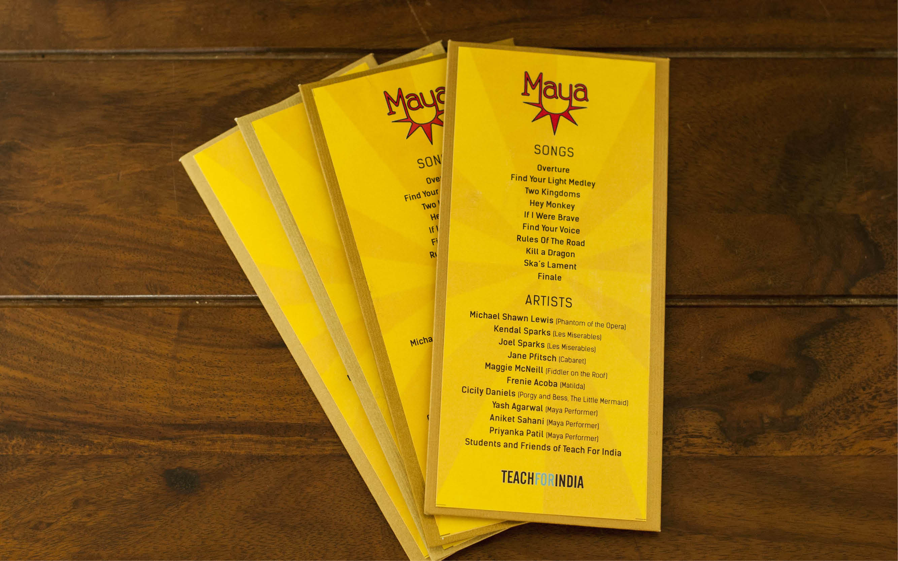
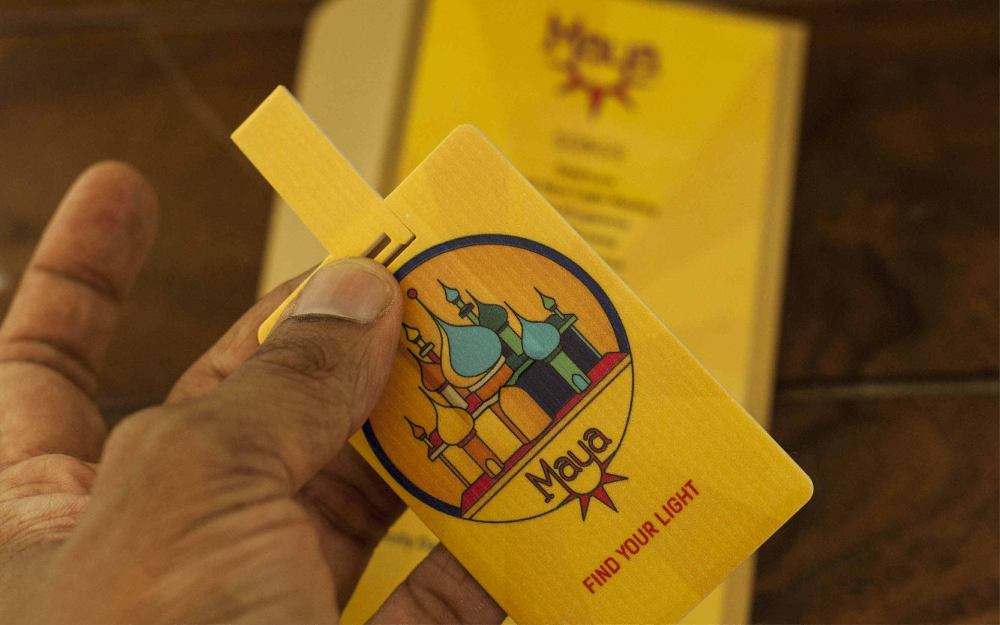
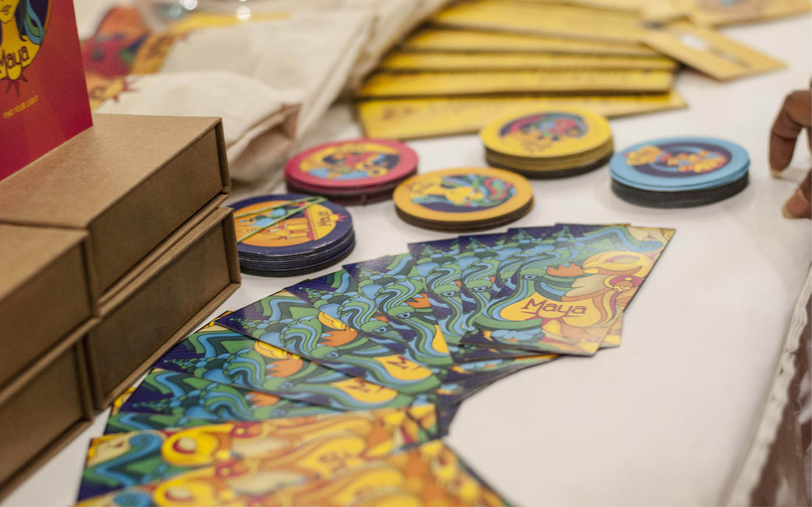
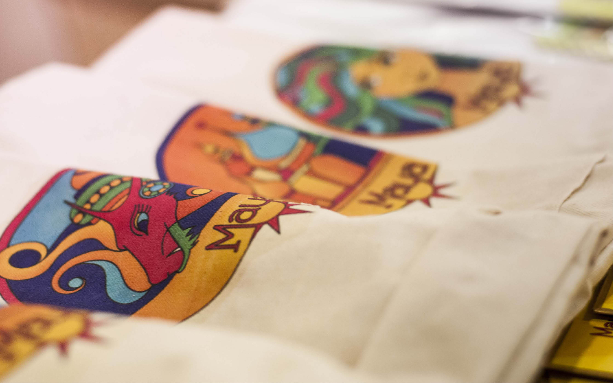
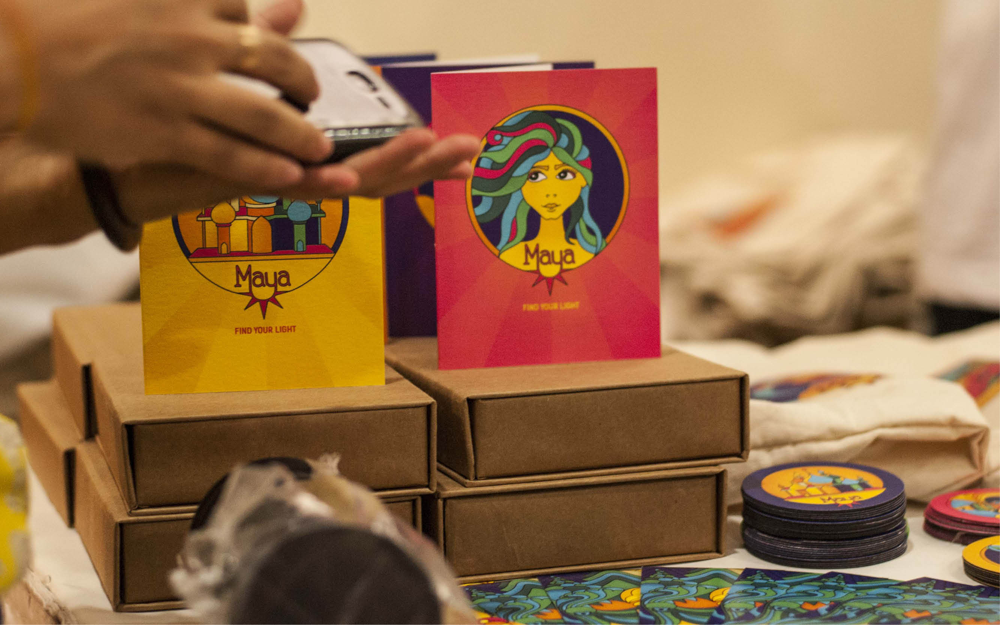
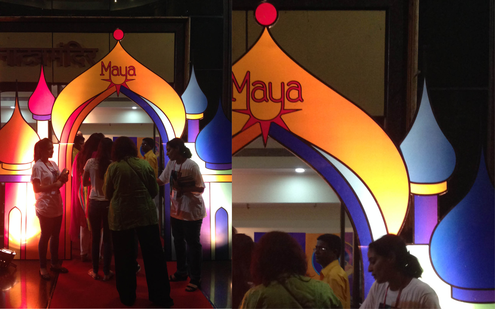
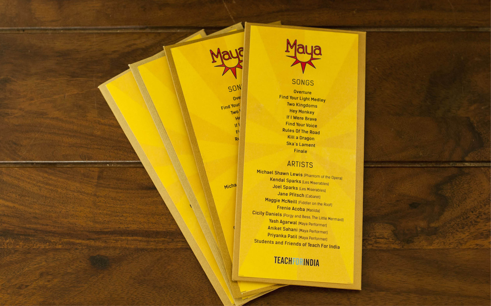
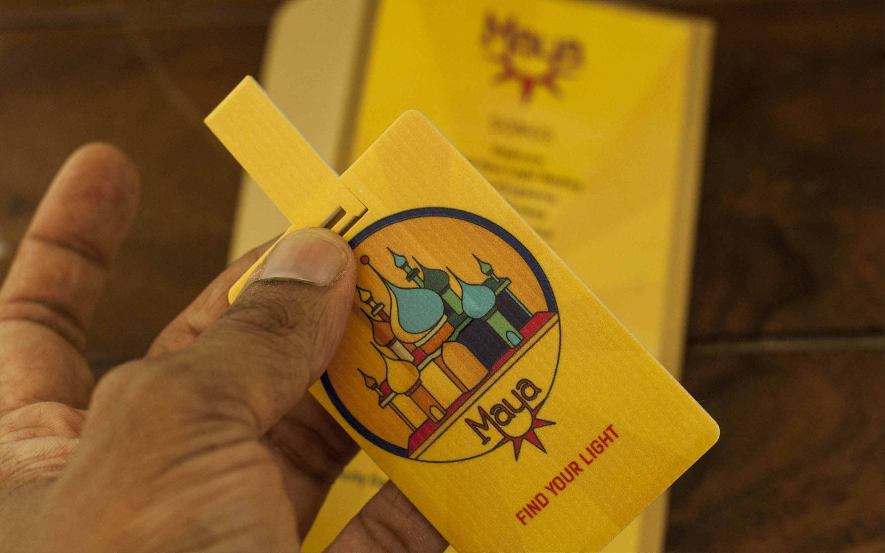
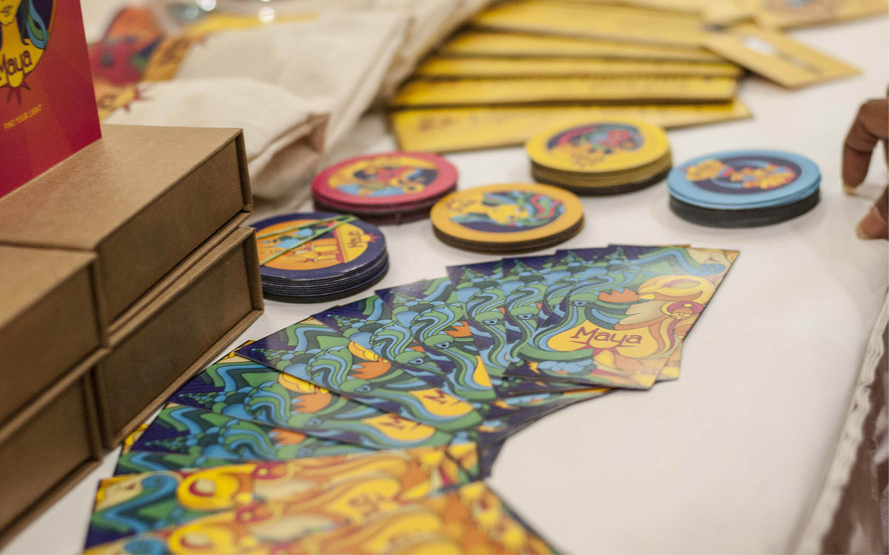
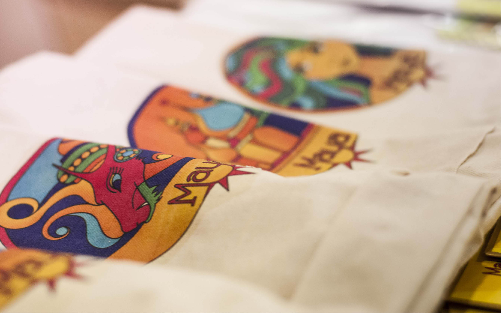
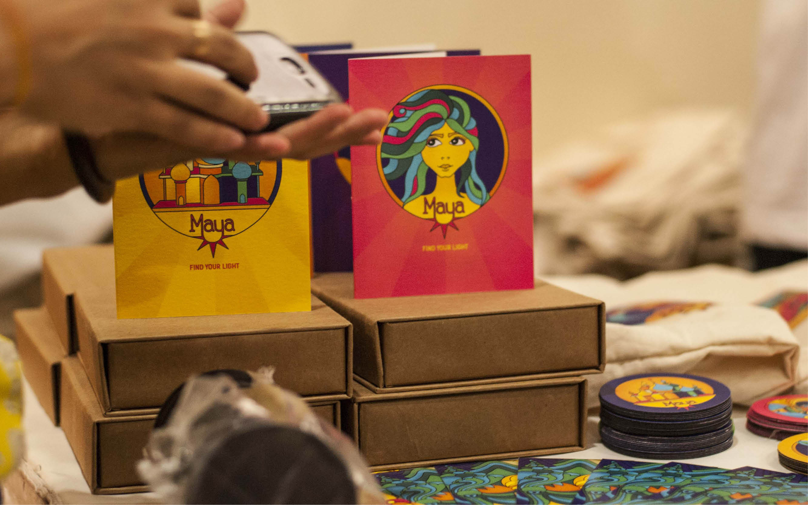
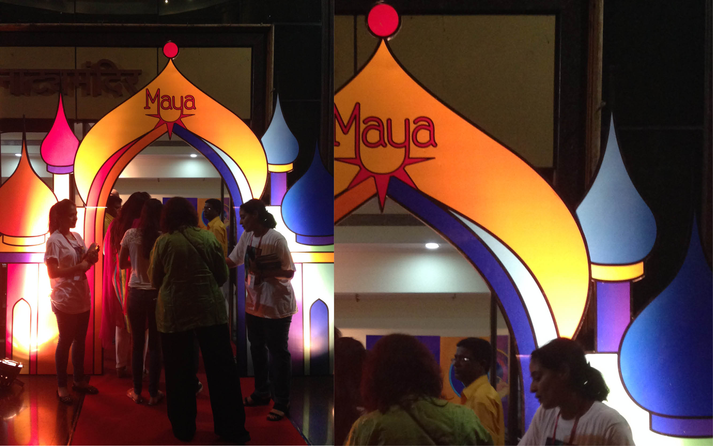